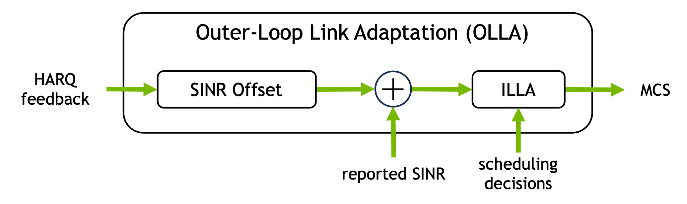
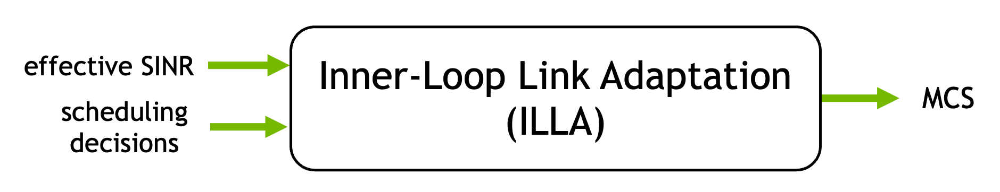

Inner & Outer Loop Link Adaptation Algorithm (ILLA & OLLA)#
The outer-loop link adaptation (OLLA) algorithm is the industry standard for link adaptation in cellular communication systems. OLLA selects the MCS that meets a target BLER based on pre-computed BLER tables and the latest SINR estimation. The latter is adjusted by an offset, updated using fixed step-size rules based on the received ACK/NACKs. This procedure drives the long-term BLER close to the target value.

Fig. 27 OLLA maintains an adaptive SINR offset based on HARQ feedback to achieve target BLER.#
The OLLA algorithm uses an inner-loop link adaptation (ILLA) algorithm as a subroutine, to select the MCS based on the latest SINR estimation and pre-computed BLER-vs-SINR tables. The details of the ILLA and OLLA algorithms are presented in the following sections.

Fig. 28 Inner Loop Link Adaptation (ILLA) selects the optimal MCS from pre-computed BLER tables, based on the corrected SINR.#
In this tutorial, two variants of the OLLA algorithm are implemented:
Simple OLLA: Drives the SINR offset from MAC scheduling statistics (retransmission counters) and looks up the per-MCS SINR threshold from raw BLER-vs-SNR tables (one CSV per MCS). Requires no changes to the OAI gNB MAC.
Advanced OLLA (recommended): Extends the OAI gNB MAC with a per-UE HARQ feedback history list (direct ACK/NACK access) and approximates the BLER-vs-SINR curve with a sigmoid function, allowing for fine interpolation across SINR.
Algorithm Overview#
OLLA operates on the principle of stochastic approximation, where the SINR is corrected by an offset \(\Delta_{\text{offset}}\) that is itself updated based on HARQ feedback as follows:
where \(\Delta_{\text{offset}}^{(t)}\) is the SINR offset at time \(t\).
The ACK/NACK step sizes \(\Delta_{\text{ACK}}\) and \(\Delta_{\text{NACK}}\) are related to each other via the target BLER \(\tau\) (typically, \(\tau=0.1\)):
The effective SINR is corrected by the offset as:
where \(\text{SINR}_{\text{reported}}^{(t)}\) is the effective SINR from the most recent CQI report. Note that, for simplicity, we here use a positive offset formulation, rather than the negative offset commonly used in the literature.
Finally, the MCS is selected as the highest MCS that does not exceed the target BLER, according to pre-computed BLER tables and with respect to the effective \(\text{SINR}_{\text{effective}}^{(t)}\). This procedure is commonly referred to as “inner loop link adaptation” (ILLA).
Simple ILLA Implementation#
We start with the simple ILLA implementation, which is based on pre-computed tables for the required SNR to achieve the BLER target.
The ILLA module selects the MCS as the highest MCS that does not exceed the target BLER, according to pre-computed BLER tables and with respect to the (corrected) effective SINR. These tables are designed to achieve the BLER target for a given MCS and code block size (CBS).
// ILLA (Inner Loop Link Adaptation)
// Selects max MCS that achieves BLER target for given SNR
// max MCS s.t. BLER(SNR, MCS) < TARGET_BLER
static int illa_select_mcs(float effective_snr, int max_mcs, int min_mcs) {
int selected_mcs = min_mcs;
for (int mcs = max_mcs; mcs >= min_mcs; mcs--) {
if (effective_snr > snr_at_target_bler[mcs]) {
selected_mcs = mcs;
break;
}
}
return selected_mcs;
}
A limitation with the BLER-vs-SNR tables shipped with OAI is that they are simulated for only one MCS table index, while 3GPP defines several of them.
The simple OLLA variant works with existing OAI gNB MAC layer without requiring
functional changes.
Thus, the simple OLLA implementation operates solely within the
get_mcs_from_bler function using basic scheduling statistics from
NR_mac_dir_stats_t *stats.
// Number of scheduled transmissions since last OLLA update
const int num_dl_sched = (int)(stats->rounds[0] - bler_stats->rounds[0]);
// Number of retransmissions since last OLLA update (corresponds to # NACKs)
const int num_dl_retx = (int)(stats->rounds[1] - bler_stats->rounds[1]);
// Calculate number of ACKs and NACKs
const int num_nacks = num_dl_retx;
const int num_acks = num_dl_sched - num_dl_retx;
// Update OLLA offset based on ACKs and NACKs
*olla_snr_offset -= num_nacks * OLLA_STEP_SIZE; // NACKs decrease offset
*olla_snr_offset += num_acks * OLLA_STEP_SIZE * (OLLA_TARGET_BLER / (1.0f - OLLA_TARGET_BLER)); // ACKs increase offset
Advanced ILLA Implementation#
As for simple ILLA, the advanced ILLA implementation relies on pre-computed SINR-vs-BLER tables. Yet, unlike simple ILLA, it supports different table indices and is based on a finer BLER interpolation against SINR, using the following sigmoid approximation:
where \(c\) is the center parameter [dB] and \(s\) is the scale
parameter [dB].
Such parameters are pre-computed for each MCS by fitting the BLER vs. SINR
curve obtained via simulations on AWGN channels to the sigmoid function. The
parameters are stored in the file bler_sigma_fit.csv.
The following table shows a few representative sigmoid parameters from
bler_sigma_fit.csv. Parameters are derived by fitting the BLER vs. SINR
curves obtained via simulations on AWGN channels with Sionna.
MCS Index |
Center c |
Scale s |
|---|---|---|
2 |
-1.91 |
0.44 |
6 |
4.84 |
0.51 |
10 |
8.36 |
0.52 |
14 |
12.20 |
0.57 |
20 |
18.10 |
0.69 |
Note
The sigmoid parameters \(c\) and \(s\) are pre-computed per MCS through regression fitting. The low regression loss highlights high accuracy for a wide range of BLER target values. However, it might not be accurate enough for very low BLER targets in ultra reliable low latency communications (URLLC).
The ILLA MCS selection scans from the CQI-capped max_mcs downward, picking
the highest MCS whose target-BLER SINR threshold is below the effective SINR:
int new_mcs = illa_select_mcs(effective_snr, mcs_table_idx, max_mcs_allowed, OLLA_MIN_MCS);
OLLA Implementation#
The simple OLLA variant uses simple ILLA as subroutine.
Conversely, the advanced OLLA uses advanced ILLA, as well as an enhanced
HARQ feedback, using actual ACK/NACK reports from UE, instead of relying on
aggregated scheduling statistics.
This requires additional changes to the OAI gNB PDSCH scheduler in gNB_scheduler_uci.c:
To maintain an MCS history list, direct access to HARQ feedback is provided,
rather than relying on scheduling statistics. The link adaptation function
(get_mcs_from_bler called by the proportional fairness scheduler) then consumes and resets the list
as follows:
ack_nack_stats_t print_mcs_history(NR_mcs_history_t *mcs_hist, rnti_t rnti) {
ack_nack_stats_t stats = {.num_acks = 0, .num_nacks = 0, .cumltv_tbs_ack=0};
// Input validation
if (!mcs_hist) {
LOG_E(MAC, "UE %04x: Null pointer in print_mcs_history\n", rnti);
return stats;
}
if (mcs_hist->count == 0) {
LOG_I(MAC, "UE %04x: No MCS history available\n", rnti);
return stats;
}
LOG_I(MAC, "\nMCS History for UE %04x (count: %d):\n", rnti, mcs_hist->count);
LOG_I(MAC, "----------------------------------------\n");
LOG_I(MAC, "Index | MCS | Success | Frame.Slot | TB Size\n");
LOG_I(MAC, "----------------------------------------\n");
// Start from the oldest entry (head) and move forward
int idx = mcs_hist->head;
for (int i = 0; i < mcs_hist->count; i++) {
const NR_mcs_history_entry_t *entry = &mcs_hist->entries[idx];
uint32_t frame = entry->timestamp >> 16;
uint32_t slot = entry->timestamp & 0xFFFF;
stats.num_acks += entry->success;
// update 1st iter HARQ normalized throughput statistic
stats.cumltv_tbs_ack += entry->success ? entry->tb_size * entry->spectral_efficiency / SE_ZERO : 0;
LOG_I(MAC, "%5d | %3d | %7s | %4d.%2d | %8d\n",
i,
entry->mcs,
entry->success ? "ACK" : "NACK",
frame,
slot,
entry->tb_size);
// Move to next entry in FIFO order
idx = (idx + 1) % MAX_MCS_HISTORY;
}
stats.num_nacks = mcs_hist->count - stats.num_acks;
LOG_I(MAC, "----------------------------------------\n");
LOG_I(MAC, "%5d ACK %5d NACK \n", stats.num_acks, stats.num_nacks);
LOG_I(MAC, "----------------------------------------\n");
// Clear the history after printing
mcs_hist->head = 0;
mcs_hist->tail = 0;
mcs_hist->count = 0;
return stats;
}
OLLA parameters are hardcoded in the header files (link_adaptation_olla.h for simple OLLA, link_adaptation_mcs_hist_olla.h for advanced OLLA). To modify them, edit and recompile:
#define OLLA_STEP_SIZE 1.0f // Adaptation speed
#define OLLA_TARGET_BLER 0.1f // Target 10% BLER
#define OLLA_MIN_MCS 3 // Minimum MCS floor
Implementation Aspects#
The advanced OLLA implementation includes several key components.
First, the SINR threshold is pre-computed once per (MCS table, MCS) pair by
inverting the sigmoid fit at the target BLER:
/**
* @brief Compute SNR thresholds for target BLER using sigmoid approximation
*
* Pre-computes the SNR values where each MCS achieves the target BLER threshold
* using the inverse of the sigmoid function:
* SNR = center_db + scale_db * log(1/BLER_target - 1)
*
* @note Must be called after sigma_fit_data_table_pdsch is initialized
* @warning Sets SNR to -99.0 dB for unimplemented (table, MCS) combinations
*/
static void compute_snr_at_target_bler(void) {
if (OLLA_TARGET_BLER <= 0.0f || OLLA_TARGET_BLER >= 1.0f) {
LOG_E(MAC, "Invalid target BLER %.3f, must be in range (0,1)\n", OLLA_TARGET_BLER);
abort();
}
const float log_term = log(1.0f / OLLA_TARGET_BLER - 1.0f);
if (!isfinite(log_term)) {
LOG_E(MAC, "Invalid log term for target BLER %.3f\n", OLLA_TARGET_BLER);
abort();
}
for (int mcs_table_idx = 0; mcs_table_idx < NUM_MCS_TABLES_DEFINED; mcs_table_idx++) {
for (int mcs = 0; mcs <= MAX_MCS_IDX; mcs++) {
if (sigma_fit_data_table_pdsch[mcs_table_idx][mcs].cbs_num_info_bits != SIGMA_FIT_NOT_IMPLEMENTED) {
float sigmoid_center_db = sigma_fit_data_table_pdsch[mcs_table_idx][mcs].sigmoid_center_db;
float sigmoid_scale_db = sigma_fit_data_table_pdsch[mcs_table_idx][mcs].sigmoid_scale_db;
if (sigmoid_scale_db <= 0.0f) {
LOG_E(MAC, "Invalid sigmoid scale parameter (<= 0) for MCS %d, table %d\n",
mcs, mcs_table_idx);
abort();
}
snr_at_target_bler[mcs_table_idx][mcs] = sigmoid_center_db + sigmoid_scale_db * log_term;
} else {
snr_at_target_bler[mcs_table_idx][mcs] = -99.0f;
}
}
}
}
Further, it includes extended logging for ACK and NACK statistics:
memcpy(bler_stats->rounds, stats->rounds, sizeof(stats->rounds));
if (log_file_out) {
struct timespec ts;
clock_gettime(CLOCK_REALTIME, &ts);
fprintf(log_file_out, "%ld.%09ld,%d,%d,%d,%d,%d,%d,%d,%d,%.6f\n",
ts.tv_sec, ts.tv_nsec, frame, rnti, max_mcs, old_mcs, new_mcs,
num_acks, num_nacks, ack_nack_stats.cumltv_tbs_ack, bler_stats->bler);
fflush(log_file_out);
}
This provides detailed statistics on the number of reported ACKs and NACKs, as well as the cumulative first-HARQ iteration throughput normalized by spectral efficiency.
See the Configuration and Usage section for more details on how to use the link adaptation algorithms.
CQI Feedback#
OAI-LA and OLLA depend on CQI (Channel Quality Indicator) reports.
They both use the max_mcs parameter from CQI feedback to compute the
reported SNR from CQI reports:
float reported_snr = snr_at_target_bler[mcs_table_idx][max_mcs_allowed];
If the CQI reports are unreliable, it may be preferable to simply ignore them and rely solely on HARQ-based adaptation.
To this aim, you can set max_mcs to a fixed value (e.g., 28) in the code, or set the global constant in link_adaptation_mcs_hist_olla.h:
#define MAX_MCS_IDX 28